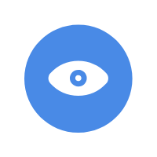

面试经历|为即将找工作的你保驾护航
2018-04-23 10:44:41 3102

前端好学还是后端好学？ 很多刚开始准备接触编程的朋友都会考虑这么一个问题，那么，前端和后端哪个更难？也就是说前端和后端哪个更容易学？下面我们就来分析一下前端好学还是后端好学。
在分析前端和后端哪个好学之前，我们需要先来看一下前端和后端的区别
前端学习
web前端工程师的主要职能是做外观开发，用到一些特效技术，来给网页或者界面完成非常炫酷的形象，展现给用户，让用户感受到更好的视觉冲击。前端的业务逻辑和入门相对于后端来说比较简单，但是并不是说前端没有技术深度。入门来说，是前端比较简单的。但是内容很杂，要写出有效率，方法合理的前端代码也是需要钻研的。
后端学习
后端工程师主要是做功能，让用户的各种实际操作能够迅速得到网站的反应，比较注重实用的功能。要考虑数据库，逻辑处理和安全验证。
前端和后端哪个难？
其实对于前端和后端来说难度都差不多，关键看自己的对哪方面感兴趣，要是真的想去学习，学什么都不难的。而且这二者并没有高下之分，不管是WEB前端还是后端，学精通了都是高薪职业，都很有发展前景。
以上就是前端好学还是后端好学？的详细内容，更多请关注老K学堂其它相关文章！
不会水的鱼 2019-02-24 14:07:24
我认为学习前端还是后天要看个人兴趣。
香烟爱上火柴 2019-01-04 14:09:14
我喜欢前端
好想你 2019-01-02 13:07:54
我喜欢后端
水和鱼 2018-12-14 11:07:24
学习了老师的课程，并能迅速践行实践。
小白兔 2018-11-26 15:21:24
又学一遍，很不错。
小林同学 2018-10-20 18:07:24
讲课认真耐心，谢谢老师。